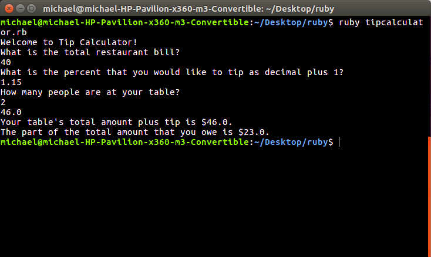
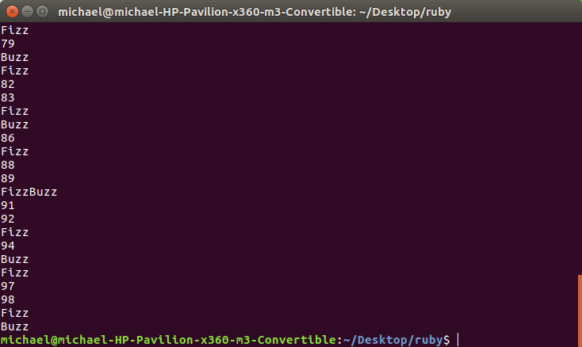

Overview
My name is Michael Rodriguez. I am a student developer with experience in HTML5, CSS3, Javascript, Visual Basic 2008, and Ruby. I am going to be a junior at South Plantation High School. I am currently enrolled at the Codeskools computer programming internship at the Las Olas Campus of Broward College, located at 225 E Las Olas Blvd, Ft. Lauderdale, FL 33301, provided by Broward County Public Schools, Wyncode, the South Florida Accelerator, and Innovation Florida. Here I have learned how to structure a and style a website in HTML5 and CSS3, script a website in Javascript, and script a back-end web server using Ruby. Previously, in my Game & Simulation Foundations class in 10th grade, I learned how to program Win32 programs using Visual Basic 2008. My projects can be found on my Portfolio page, as well as my GitHub profile. More information about the program that I am in can be found here and here.
Membership and Accolades
Education
Honor Student | Class of 2019 | South Plantation High School
- I am an enviornmental Science Magnet student.
- I have taken the following computer courses: Web Design in 6th grade, Introduction to Information Technology Honors in 9th grade, Game & Simulation Foundationsm Honots in 10th grade
- My current GPA: 3.9 weighted/ 3.4 unweighted
Clubs & Organizations/Volunteer Work
National Honor Society
- I maintain the high standards of National Honor Society through scholarship, service, leadership, and character. I in such activities as tutoring and fundraising for various charitites in our community throughout the school year.
Everglades Restoration Ambassadors
- I volunteer in community outreach programs promoting information about the importance of the Everglades ecosystem and its impact on the environment as well as clean-up activities. Participate durng the annual Broward County Watery Matters Day and Earth Day events where Broward County promotes water conservation to the public. Eliminate non-native vegetation during Broward Eco-Action Days at Sceret Woods County Park in Ft. Lauderdale several times during ther school and provice genral clean-up around the park. I also participate in strret clean-ups and landscape beautification projects in front of and around my school's campus.
Boy Scouts of America
- I completed an Eagle Scout project that oversaw the completion of 22 Wood Duck houses that were placed in areas in the Everglades. These provide safe breeding homes for the preservation of the Wood Duck population. I worked closely with the Florida Wildlife Commission in placing the houses by airboat. I served as the Assistant Senior Patrol Leader for Troop 406. in Plantation, FL.
2Life Youth Group
- I am a member of the 2Life Youth Group at St. Gregory the Great Catholic Church. I participate in social activities as well as charity events. I help raise money for mission trips around the world.
Relay for Life
- I led the luminaria table at a Relay for Life evdent for the City of Cooper City to help raise money to end cancer.
Awards & Recognition
- Represented Seminole Middle School in the Broward Knowledge Bowl as a 6th grader in 2013
- Broward County Science Fair Honorable Mention Ribbon Winner in 2014
- Speech & Debate, 1st Place, Imprompotu Speech, Seminole Middle School in 2015
- Received in Honor Roll for 1st Quarter of 6th Grde at Seminole Middle School in 2012.
Interests
- Technology
- History
- Politics
- Photography
- Video Games

Tip Calculator
A simple Ruby program for calculating tip at a restaurant.

FizzBuzz
A fun way to pass the time with numbers.

Weather
A Ruby application for finding out the weather and temperature using the OpenWeather API.